Product Video
Eye Link Belt Structure Before Project Review
Clean product reference for washing, pasteurisation, blanching, cooling, and other washdown conveyor systems.
Eye link construction delivers the highest open area of any wire mesh belt type - up to 75% open area. Water, steam, and cold air pass through the belt surface with minimum resistance. Standard specification for washing lines, pasteurisation tunnels, blanching conveyors, and any application where throughput of liquid or gas is critical.
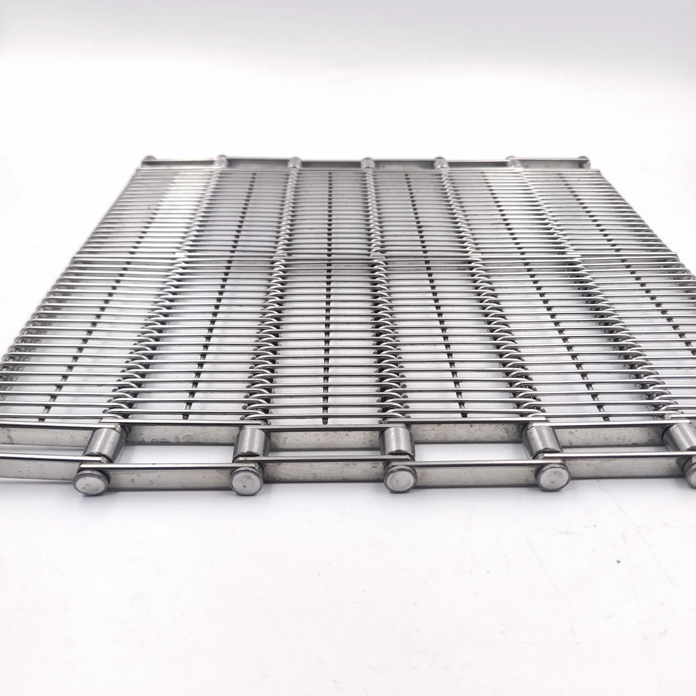
All dimensions custom per OEM drawing. Confirmed with engineering team before production begins. No standard fixed sizes.
| Parameter | Specification | Notes |
|---|---|---|
| Wire Diameter | 1.2 mm to 4.0 mm · Custom | In-house drawn, verified by alloy and tensile test |
| Link Pitch | Custom per OEM drawing | Matched to sprocket tooth profile before production |
| Open Area | Up to 75% (pitch dependent) | Higher pitch delivers higher open area; specify per application |
| Belt Width | Custom, 100 mm to 2,500 mm | Confirmed to OEM drawing with no fixed catalogue widths |
| Rod Diameter | Equal to or larger than wire diameter | Calculated for load and travel distance |
| Edge Construction | Welded or formed edge, per specification | Food-safe edge options include folded, welded, or reinforced styles |
| Material Grades | SUS304 / SUS316L | SUS316L standard for washdown and seafood applications |
| Temperature Range | -40°C to 800°C (SUS316L) | Suitable from frozen-duty service to pasteurisation temperatures |
| Surface Finish | Acid pickled / passivated surface | Supports clean surface condition and corrosion resistance for washdown applications |
| Fit Verification | 100% dimensional and drive-match review | Width, pitch, edge construction, and sprocket matching checked before shipment |
| Weld Method | Taiwan-imported welding process | Controlled welding with weld-point inspection and edge alignment review |
| Lead Time | 15-25 working days from drawing confirmation | Standard production batch |
| Sample Review | Available for new OEM projects | Produced to confirmed specification when test-fitting is needed. |
All parameters are custom per OEM drawing. Send your drawing or existing belt dimensions - we confirm the specification and quotation path after engineering review.
Use this 3x3 product photo set to confirm open-area structure, edge construction, Taiwan-imported welding details, surface finish, and matched drive parts before quotation or replacement matching.
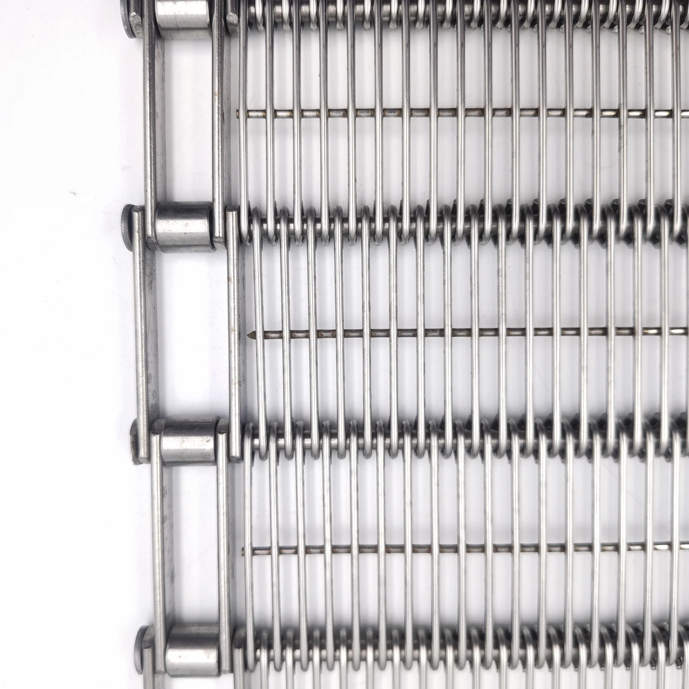
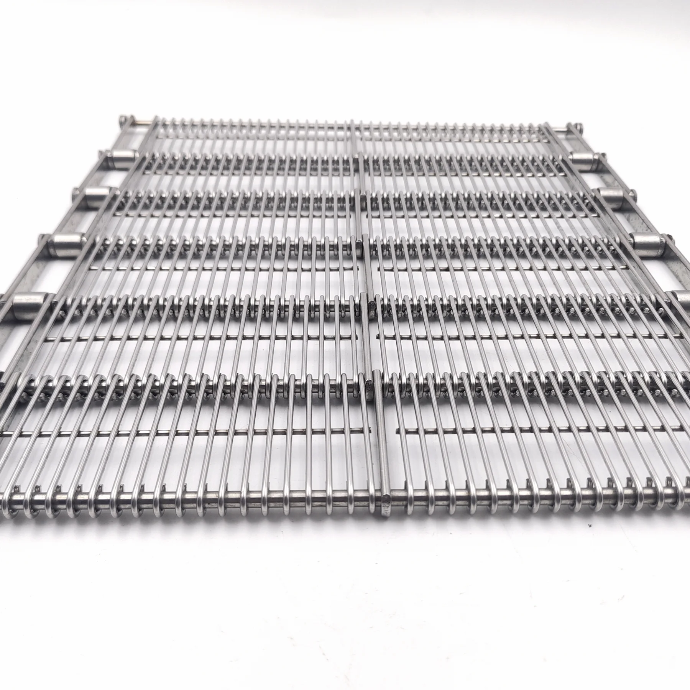
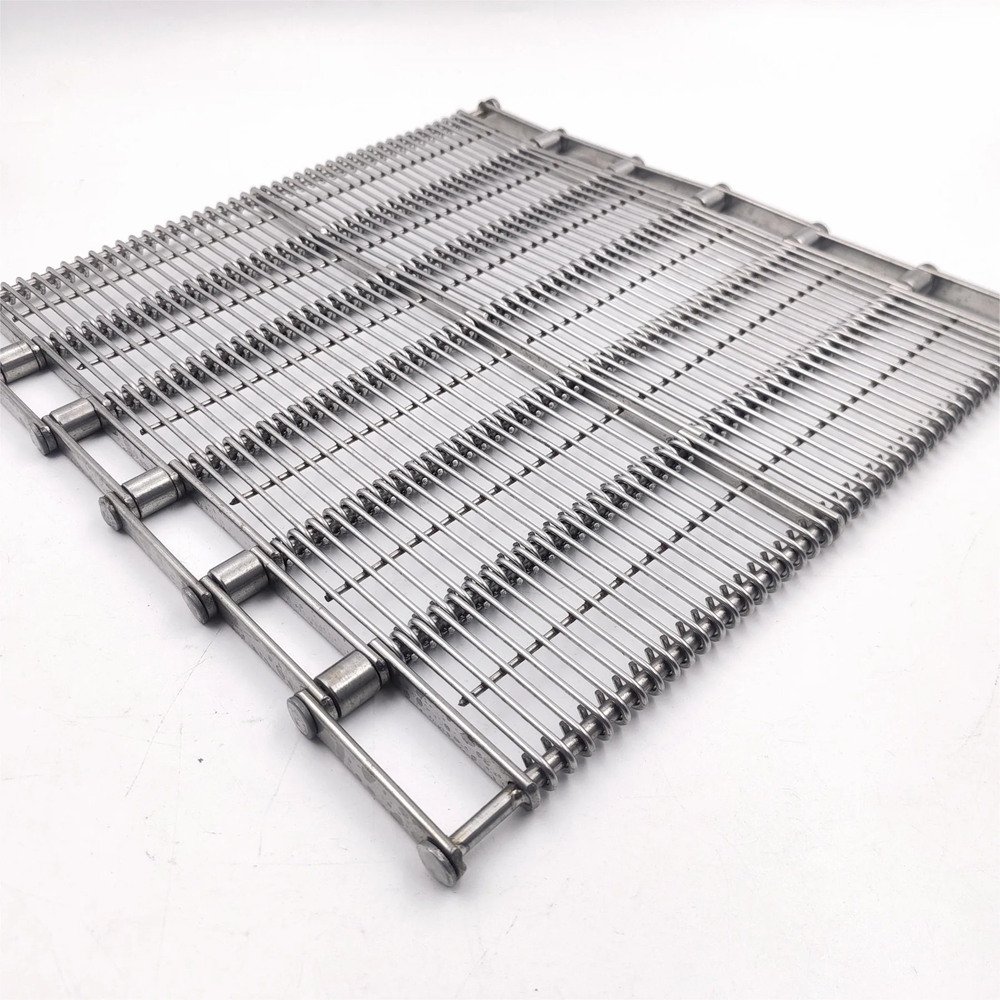
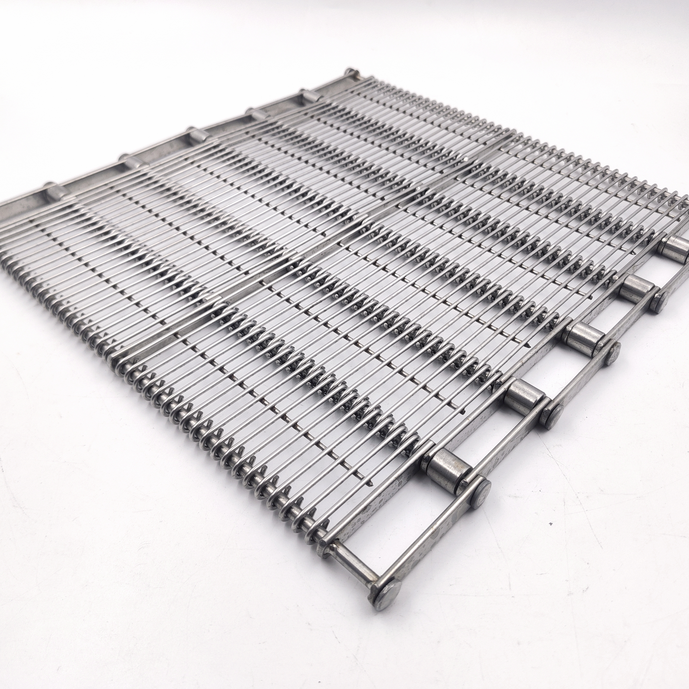


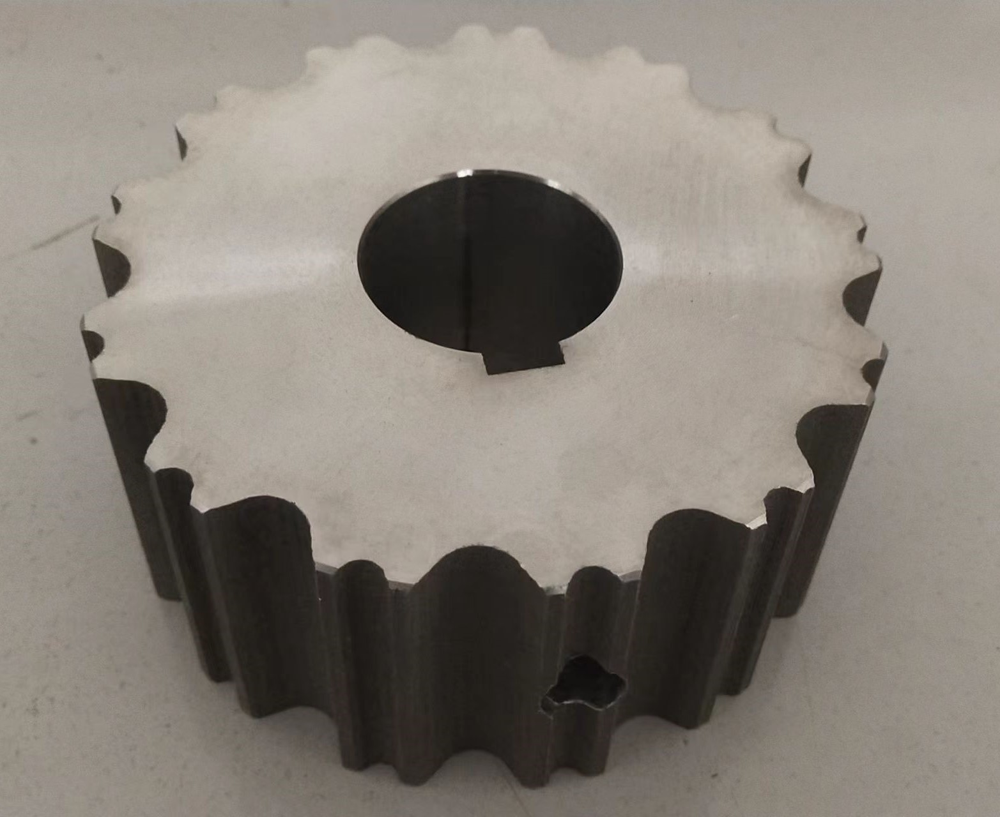
Real production and shipment proof for dimensional control, surface finish, drive matching, and export delivery.
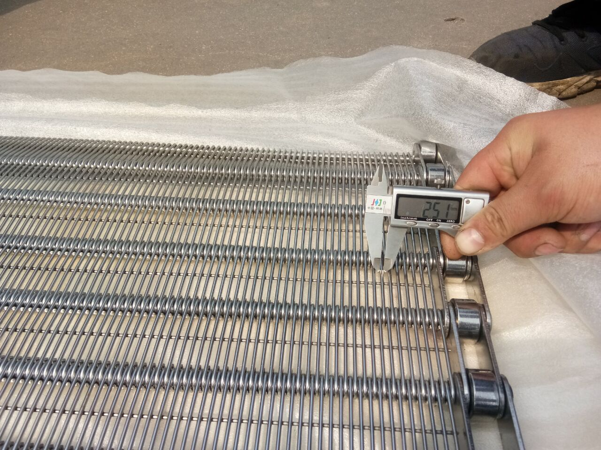
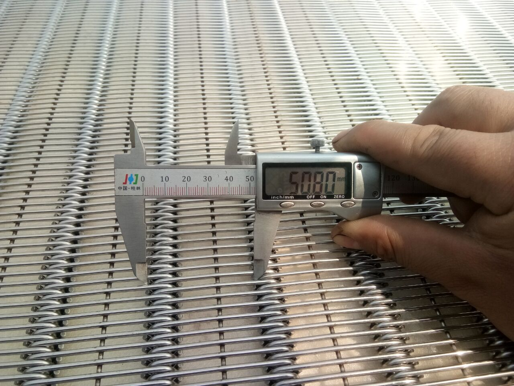
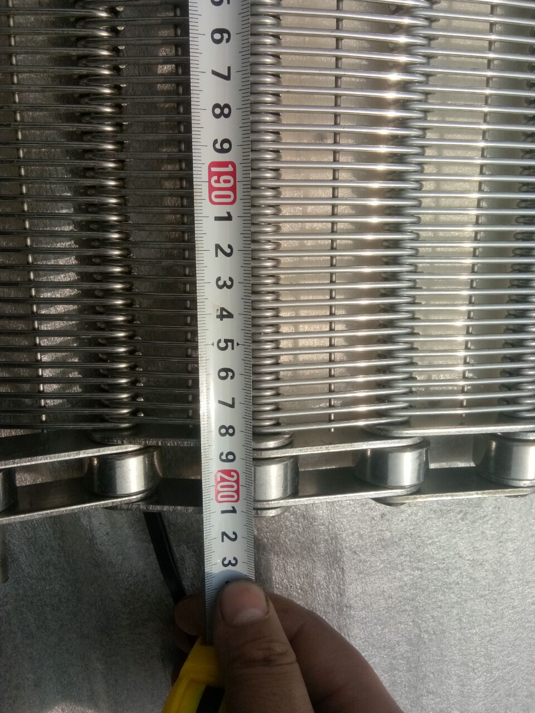
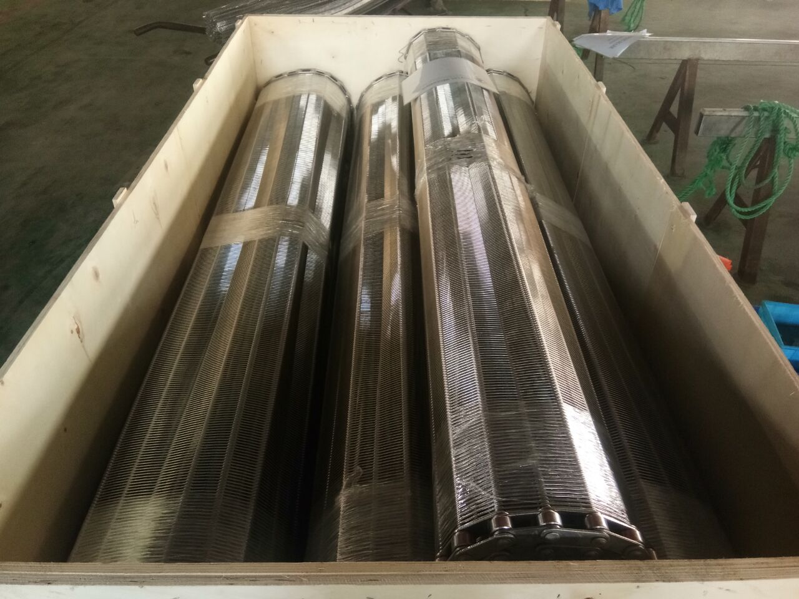
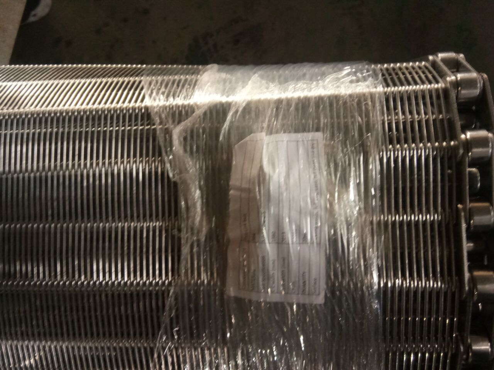
Use this short product video to review eye link opening, rod connection, side structure, and drainage surface before sending a drawing or replacement sample.
Clean product reference for washing, pasteurisation, blanching, cooling, and other washdown conveyor systems.
Every claim is backed by a verifiable manufacturing process or documented test result.
Eye link belts are checked by drawing, pitch, width, edge construction, and sprocket matching before shipment. This is the correct verification path for eye link belt projects.
Every weld point is checked for consistency, edge alignment, and sprocket engagement before shipment.
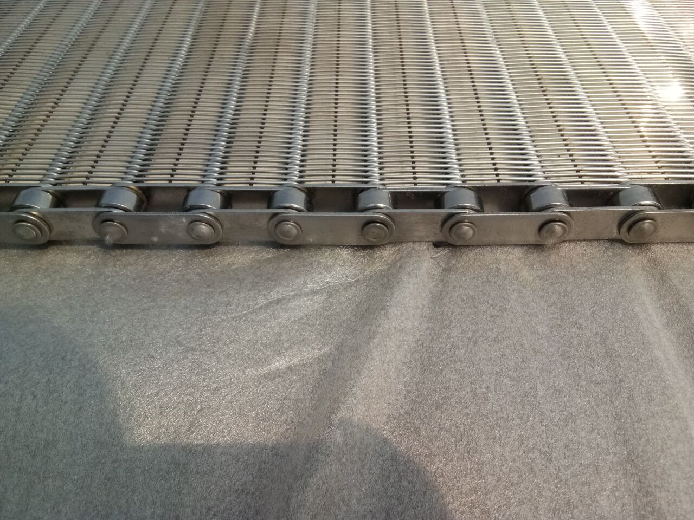
Incoming material check → in-process assembly check → pitch and sprocket matching → final pre-shipment inspection.
Real operating environments. Each application listed has active YIYI Mesh Belt belts running in customer facilities.
Material grade selected to operating temperature, chemical exposure, and application material requirements. Not to cost alone.
Eye link belts on washing lines are often the limiting component for production uptime. We specialise in fast, accurate replacements - matched to your existing specification without system modification or line stoppage.
These represent the most common OEM engagement patterns for eye link belt supply.
Use this decision guide to confirm eye link belt is the correct specification before requesting a quote.
For food processing OEMs designing to EU and US material review standards, belt selection is a hygiene design decision, not just a mechanical one.
High open area in eye link belt serves two hygiene functions: it allows complete drainage of wash water and processing liquids, eliminating standing water that creates bacterial growth conditions; and it enables cleaning water and sanitiser to reach all surfaces of the belt in a single CIP pass. Dense mesh belts with low open area require multiple cleaning passes and still retain moisture in recesses.
Eye link belt surface treatment is described as acid pickling and passivation. This helps clean welding discoloration, support stainless steel passivation, and improve corrosion resistance in washdown environments. For hygiene-sensitive applications, YIYI focuses on smooth edge treatment, cleanable open structure, correct material grade, and documented final inspection.
SUS304 is an excellent food-processing stainless steel - but it has a specific weakness in chloride environments. Chloride ions (from seawater, brine, meat processing liquids, or sodium hypochlorite CIP sanitiser) attack the passive oxide layer on SUS304 and can initiate pitting corrosion. In a food processing environment, pits in belt wire become contamination traps that are effectively impossible to clean.
SUS316L adds 2-3% molybdenum to the alloy composition. Molybdenum strengthens the passive oxide layer specifically against chloride attack, dramatically reducing pitting corrosion susceptibility. For any application involving brine, seawater, seafood, meat, or regular chlorine sanitisation - SUS316L is the correct specification. YIYI Mesh Belt stocks SUS316L wire in all standard diameters and verifies grade by alloy spectrometer test on every batch.
Application-specific installation guidance for washing, pasteurisation, and seafood processing lines.
New SUS316L eye link belts should be passivated after installation to restore the protective oxide layer disturbed during cutting and joining. Use a food-processing passivation solution, typically 20-25% nitric acid or a citric-acid alternative, per ASTM A967 or equivalent. This step significantly extends service life in aggressive washing environments.
Eye link belts running through wash tunnels should be tensioned at operating temperature with water present on the belt. Dry tensioning at room temperature will result in over-tension when the belt is wet and under full load in the wash zone - this accelerates edge bar wear and reduces service life.
SUS316L eye link belts tolerate standard CIP concentrations of sodium hypochlorite (NaOCl) up to 200 ppm free chlorine at ambient temperature. For higher concentrations or elevated temperature CIP (>60°C), rinse immediately after sanitiser contact. Extended contact with concentrated hypochlorite at elevated temperature can cause surface discolouration and reduces the passive oxide layer protection over time.
For washing lines, ensure belt support rails or slider beds allow free drainage of wash water. Standing water on belt support surfaces between the belt passes is a hygiene risk. Our engineering team can advise on belt support design for new washing line installations to eliminate standing water zones.
Every belt is packaged to the same export standard regardless of order size. Belt integrity at delivery is our commitment.
Belt coiled to minimum bend radius specification, wrapped in moisture-sealed polyethylene film with silica gel desiccant inside. Protects against corrosion in sea container humidity conditions during 30+ day sea freight transit.
Corrugated cardboard inner box with edge protection. Belt coil supported on foam cradles preventing deformation during transit. Inner box sealed against dust ingress during port handling.
ISPM15 heat-treated timber pallet for international phytosanitary compliance. Pallet rated for standard 20ft and 40ft container loading. Strap-secured for forklift handling at destination port.
Each shipment includes: commercial invoice, packing list, certificate of origin (CCPIT or Form A on request), material test report (on request), ISO 9001 certification copy, and final inspection record. Additional customs documentation on request for EU, USA, and Australian market requirements.
YIYI Mesh Belt maintains a 100% on-time delivery accuracy record for confirmed orders. Every shipment is tracked from factory to port. Vessel booking confirmation, bill of lading, and arrival notification are provided to all customers within 24 hours of each milestone.
Every YIYI Mesh Belt belt is traceable from the wire rod batch used to produce the wire, through production records, to the specific belt shipped to your facility. This is a fundamental requirement for OEM customers with their own quality systems.
SUS304 and SUS316L wire rod sourced from certified Chinese and Taiwanese mills. Mill certificates showing alloy composition (Cr, Ni, Mo %, C content) filed per batch. Every batch passes YIYI Mesh Belt incoming alloy gun spectrometer test before acceptance.
Wire drawn from rod to finished diameter on YIYI Mesh Belt equipment. Finished diameter measured by digital calliper at regular intervals during drawing. Tensile strength and hardness tested on drawn wire sample per batch. Results recorded in production batch file.
Production batch number assigned at start of forming. Taiwan-imported welding process and weld-point inspection records are reviewed per batch. Production record links batch number to wire batch, production date, equipment record, and operator record. Retained for minimum 5 years.
Final inspection result recorded on signed QA form. Records include link pitch, belt width, edge alignment, weld-point review, surface condition, inspection date, inspector ID, and pass/fail result. Final inspection record is available as part of the shipment documentation package on request.
Completed belt ships with batch number linking to full production and test record. Material test report issued on request. Full traceability from wire rod mill to customer facility - available within 24 hours of any customer quality audit request.
Our approach to after-sales is built on the same principle as our production: consistency and reliability. Not a call centre - a real engineer who knows your specification.
Active orders and delivered belts receive engineering support on technical queries. Contact via WhatsApp for the fastest routing to the right team.
Your belt drawing and specification are retained in our engineering library. Reorders are placed by reference code - no re-measurement needed. Reorder lead time is typically 20% faster than first production for retained specifications.
For OEM partners, we follow up at 6 and 12 months after installation to check belt performance. If any tracking, wear, or engagement issue is reported, we review the production record and provide a root cause assessment - no charge for OEM partners.
"My work time is always online - see the message, reply promptly. This has been my habit for over 15 years. Doing business is not only about transactions, but about building genuine friendships." - YIYI Mesh Belt
Comparing key manufacturing differentiators. Based on verifiable production facts - not marketing claims.
| Capability | YIYI Mesh Belt | Typical China Manufacturer | European Supplier | Trading Company |
|---|---|---|---|---|
| In-house wire drawing | ✓ YIYI Mesh Belt - own equipment | No - external supply | No - external supply | No manufacturing |
| Eye link welding control | ✓ Taiwan-imported welding process + inspection | Manual standard | Project dependent | Manual or outsourced |
| Surface treatment | ✓ Acid pickled / passivated surface | Project dependent | ✓ Available | Not controlled |
| CIP documentation | ✓ Full pack on request | Basic | Full pack | None |
| Sample review | ✓ New OEM projects | Paid | Paid | No |
| Engineering response | ✓ Direct technical review | 24-72 hours | 24-72 hours | Variable |
| Final fit review | ✓ Every belt | Selective | Selective | None |
* Comparison based on publicly available information and direct customer feedback. Contact us to verify any specific claim.
The more information you provide, the faster we can confirm specification and quote. Minimum required: industry, temperature, belt width, and drive system.
With these 5 items: budgetary quote + material recommendation after engineering review.
With A-F: confirmed production quote and drawing confirmation within 24 hours.
Email to info@yiyimeshbelt.com or WhatsApp +86 134 5177 3742. Drawings, photos, or reference documents are all accepted for engineering review.
Verified failure patterns from food processing operators across Europe, North America, and Southeast Asia. This is what we see in replacement inquiries.
Engineering-level answers for eye link belt specification, sourcing, and food compliance questions.
Yes. Provide your existing belt sample, the manufacturer's part number, or key dimensions - link pitch, rod pitch, wire diameter, belt width, and edge construction - and we will produce a dimensionally matched replacement. Sample confirmation can be arranged before mass production to verify that your system's drive and drainage performance is unchanged from the original. Many of our European food processing customers have transitioned from Western-brand eye link belts for cost and lead time reasons while maintaining equivalent performance and material review compliance.
Eye link construction delivers the highest open area of any standard wire mesh belt - typically 60-75% depending on pitch and wire diameter. This maximises water and steam penetration for uniform product washing, and draining between processing stages is faster with less residual moisture. For comparison, balanced weave belt achieves 35-50% open area, and flat wire belt under 30%. For applications where drainage speed and product contact area matter - seafood, poultry, blanching, pasteurisation - eye link is the engineered choice.
We need: belt width (inside dimension), link pitch (longitudinal), rod pitch (transverse), wire diameter, and edge construction type (welded rod end, folded edge, or fabric edge). If you have a minimum open area requirement, specify it. If you are replacing an existing belt, photos of the current belt with a ruler alongside are usually sufficient to identify the specification. You do not need every dimension before contacting us - send what you have and we confirm the gaps in the first engineering response.
SUS304 is suitable for ambient food processing environments without aggressive cleaning chemicals - general conveying, dry processing, packaging. SUS316L is required for applications involving chlorine-based CIP sanitisers, salt contact (seafood), and high-moisture meat processing. The molybdenum content in 316L provides direct resistance to chloride ion attack at link-to-link contact zones where crevice corrosion initiates. If you are unsure, we recommend 316L - the cost difference is modest and the corrosion resistance improvement for washdown environments is significant.
For eye link belts, the surface treatment is acid pickling and passivation. This helps clean welding discoloration, supports stainless steel passivation, and improves corrosion resistance for washdown environments. For hygiene-sensitive projects, we confirm material grade, edge finish, cleanable open structure, and final inspection details before production.
Open area percentage is calculated from link pitch, rod pitch, and wire diameter - it is a defined geometric property, not an estimate. If you have a minimum open area requirement (for drainage rate, steam penetration, or regulatory compliance), specify it and we will design the link pitch geometry to meet it. We document achieved open area on the specification sheet sent for your approval before production begins.
SUS316L resists standard CIP chemicals at normal concentrations: sodium hypochlorite (chlorine sanitiser), caustic soda (NaOH) for alkaline cleaning, phosphoric and citric acid for descaling, and peracetic acid-based sanitisers. For highly concentrated chemicals, unusual blends, or elevated CIP temperatures above 80°C, contact us with specific chemistry details. We confirm compatibility before quoting rather than after delivery.
In standard food processing washing line applications with appropriate CIP chemistry and correct material grade, YIYI Mesh Belt eye link belts are designed for 3-5 years of service. In-house wire drawing ensures consistent tensile properties that resist link stretch under sustained tension. Taiwan-imported welding process and weld-point inspection help reduce weld-quality variation that can cause early joint failure. Actual service life depends on CIP frequency and concentration, operating temperature, product load, and drive tension.
Standard documentation: packing list, commercial invoice, certificate of origin, material test certificate (alloy composition, mechanical properties), ISO 9001 certification copy. Available on request: application material declaration on request, third-party inspection report, alloy gun test photo record, final inspection record, HS code advisory. For OEM customers, we maintain a production record file for each order for quality benchmark comparison on repeat orders.
Yes. For new OEM and food processing relationships, we can produce a sample to your confirmed specification for test-fitting before full production. Typical sample lead time is 7-10 working days depending on specification. This verifies open area, drainage performance, and drive engagement. We retain a reference sample from your specification for quality comparison on future orders.
Send the drawing if you have one. Send the existing belt photos if this is a replacement project. Or send the application details if you are still comparing structures. We will reply around fit, hygiene suitability, and supply practicality, not just price.